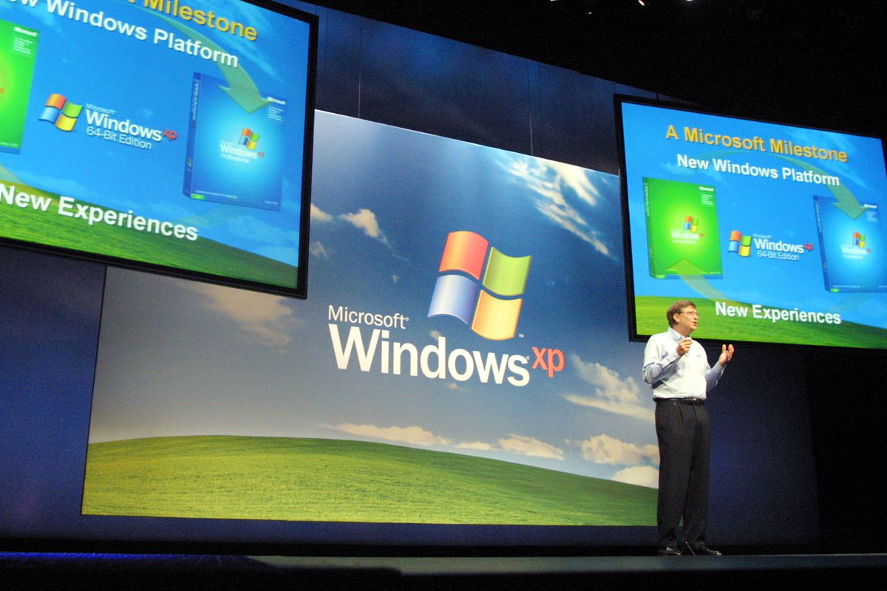
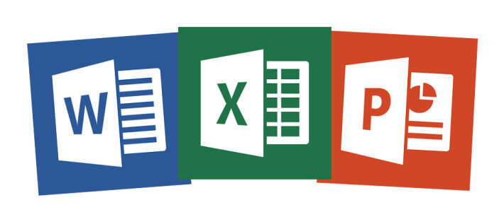
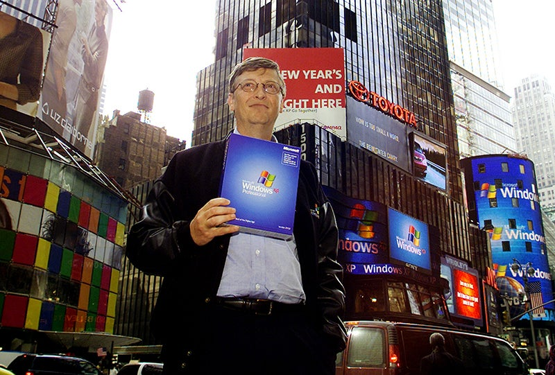

Why it represents a Milestone?

Windows XP is an operating system that Microsoft introduces in 2001. It served as an innovation of the Windows NT kernel and a successor to Windows me and Windows 2000, however it was ultimately succeeded by the infamous Windows Vista in 2006. The reason why Windows XP is one of the most important launches of a new operating system, because it was the most stable OS launched by Microsoft. It was very stable and was known to till date to be the fastest OS Microsoft has launched. Along with that variety of machines could run it, even if there were hardware were very limiting.
-
Some of its features included:
- Automatic Updates
- Multilingual Support (Professional Edition)
- Remote Desktop (Professional Edition)
- Faster OS overall
Even though Microsoft Office was introduced 1990, it application in 2000s became very apparent. This was due to many new software coming with the Office bundle, which not only were appealing to the businesses, but it later became a necessity to have Microsoft Office in your machine. Microsoft Office, in 2000s was considered an essential for someone from a student to a person working in a company environment. In 2000s Microsoft spent $1.375 billion to acquire Visio which is a diagramming software as an add-on in the Office software. It is now formally known as the flowchart application.

Skype was first released back in 2003, but later when acquired by Microsoft by paying $8.5 billion, the app during this decade was primary used for video chatting, messenger, file exchange and other communications. When acquired by Microsoft it was the go-to app for everyone to communicate with people living in different places around the world. Its market share of the international calls went up by 13% to 34% after being acquired by Microsoft. Skype was an replacement was the infamous Microsoft services known as Windows Live Messenger.
One of the main reasons why Microsoft succeeded was its approach to being graphical. OS did not used to be graphically pleasing as it focused more on features and was targeted for the programmers who knew how to use a computer. Microsoft wanted general pubic to use their machines and software without struggling to find their way around the OS. Hence they heavily focused in its Graphical approach, which showed its results in the decade of 2000s, in which the millions of users appealed to Microsoft because of its easy to use OS.
